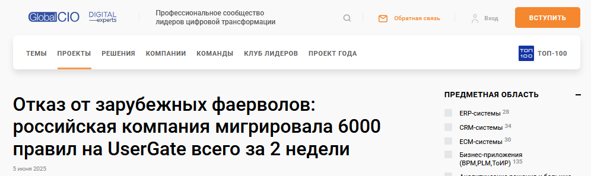
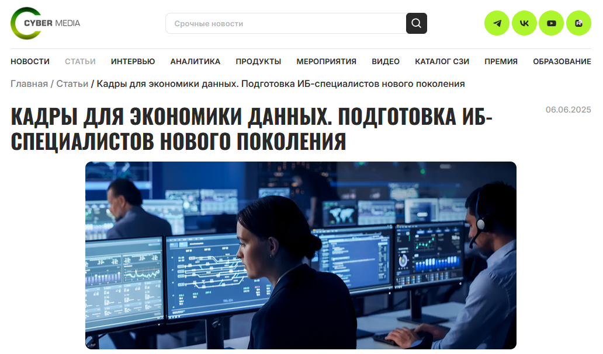

Написать B2B-статью для профессиональной аудитории — IT-директоров и специалистов по информационной безопасности.
Клиент провёл крупную миграцию: 6000 правил с зарубежных фаерволов на российское решение дней. Нужно было упаковать технически сложный проект в интересную историю для аудитории.
Аудитория профессиональная, любое упрощение или неточность сразу считываются. При этом материал не должен был превратиться в технический отчёт — его должны были дочитывать до конца.
Изучил документацию проекта, выделил то, что важно читателю: не «что сделали», а «почему именно так, с какими рисками столкнулись и что это даёт бизнесу». Выстроил структуру по схеме «масштаб задачи → ключевые решения → результат с цифрами».
Статья прошла редакционный отбор и опубликована на GlobalCIO.
Читать на GlobalCIO
Написать аналитический материал для отраслевого издания на основе интервью с экспертом. Тема — подготовка ИБ-специалистов нового поколения в условиях дефицита кадров.
Провёл интервью с Альбиной Семушкиной, руководителем рекрутинга компании «Бастион». Эксперт затронул сразу несколько тем — кадровый дефицит, новые требования к компетенциям, роль университетов, влияние автоматизации. Нашёл сквозную логику и собрал цельный текст вокруг одной идеи: рынок ищет не просто технарей, а специалистов, которые умеют думать стратегически и говорить с бизнесом на одном языке.
Статья прошла редакционный отбор и опубликована на Cyber Media.
Читать на Cyber Media